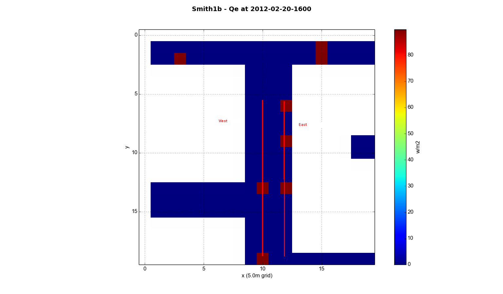

Smith St, modelled in two 100x100 areas, Smith1 and Smith2
Overall area

Smith St, area 1

Smith St, area 2

Smith St, area 2 building heights

Smith St, area 2 vegetation heights

Smith St, area 2 vegetation types


West average (10,9) to (10,19), East average (12,9) to (12,19)

These are mislabeled, these are actually Smith2b


West average (10,3) to (10,12), East average (12,3) to (12,12)

Smith1b